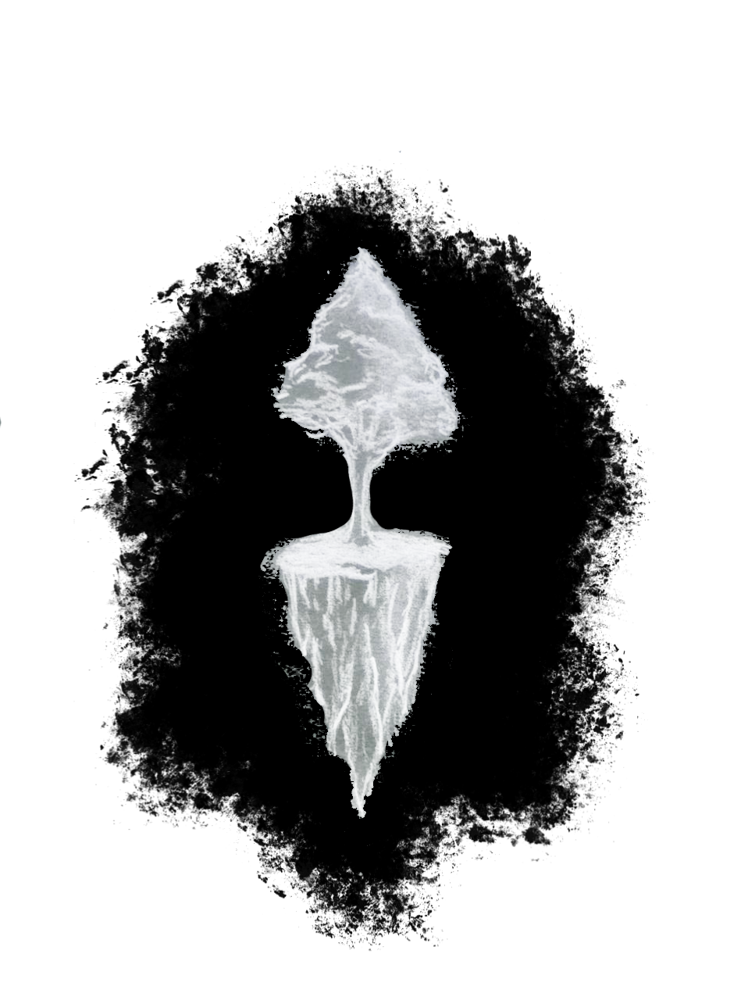

Weslley David
FullStack Next & DjangoRest
BlogMe chamo Weslley David. Sou técnico em informática e estudante de Análise e Desenvolvimento de Sistemas. Tenho interesse em entender a relação entre pessoas e máquinas, e em como a tecnologia pode organizar informações e apoiar decisões no mundo real.
Gosto especialmente de modelagem de dados e da construção de sistemas que transformem dados em ferramentas úteis. Atualmente desenvolvo aplicações utilizando Django e Next.js.
Este espaço reúne alguns dos meus projetos, experimentos e ideias ao longo do meu processo de aprendizado em tecnologia.
Gostou do layout? Sinta-se à vontade para copiar este template e usá-lo em seu próprio portfólio.